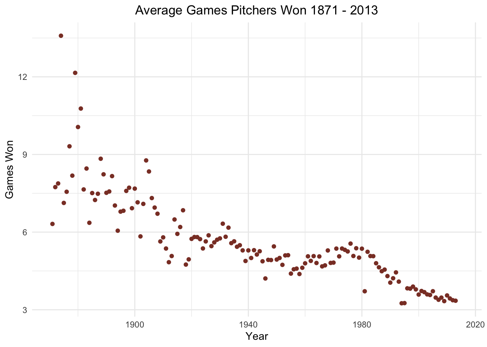

THE FOLLOWING IS AN EXPLORATION OF THE LAHMAN 2013 SQLITE DATABASE OF BASEBALL STATISTICS UP UNTIL 2011. THIS DATA WAS MADE AVAILABLE BY JEFF KNECHT. DOCUMENTATION OF EACH OF THE 24 REGULAR TABLES (AND ONE ADDITIONAL TABLE) CAN BE FOUND AT (http://seanlahman.com/files/database/readme2013.txt). THIS PROJECT USES THE FOLLOWING PACKAGES: RSQLite, dplyr, ggplot2.
OUTLINE: This report does not follow any kind of particular narrative. Instead, I investigate questions I have about the data as they arise; and I answer these questions SQL. For some questions, I attempt to answer the questions in both SQL and through querying in SQL through R using the RSQLite package. Some of the code is provided for reference underneath each question, and the full code is provided at the end of the document in a code appendix.
How many (unique) people are included in the database? How many are players, managers, etc.?
The variable used to describe people in this database is playerID. The Master table contains all of the baseball players in the database, and the Managers table contains all of the managers in the database. Since the variable playerID is used to describe both Managers and Players, we can answer this question by simply extracting unique player IDs from the Master table.
The SQL for this is
SELECT COUNT(DISTINCT playerID)
FROM Master
| COUNT(DISTINCT playerID) |
|---|
| 18354 |
We can see from the output table that there are 18354 unique people in the database.
To do this in R, I sent the above query to R, but without the COUNT() function.
The R for this is
# r for unique people in the database
all <- dbGetQuery(db, "SELECT DISTINCT playerID FROM Master")
all.unique <- unique(all)
count <- length(all.unique$playerID)This R output gives a value of 18354 for the total number of unique people in the database, which is the same output as the above SQL code.
How many players become managers?
The Managers table contains a variable called plyrMgr, which has value ‘Y’ if the manager in question was a player who became a manager. We can thus count the playerIDs of players that became managers using the Managers table.
The SQL for this is:
SELECT COUNT(DISTINCT playerID)
FROM Managers
WHERE plyrMgr = 'Y'
| COUNT(DISTINCT playerID) |
|---|
| 247 |
We can see from the output table that 247 players become managers. This is a high number, considering that the Managers database contains 682 unique playerIDs for managers, which I found using a SQL code that is not shown here. This is most likely because in early baseball history, when there were limited resources compared to what is available today, a lot of players simultaneously served as managers.
To do this in R, I use a similar method to Question 2. I sent a similar query as above to R, but without the COUNT() function.
The R for this is
# r for how many players became managers
managers2players <- dbGetQuery(db, "SELECT DISTINCT playerID FROM Managers
WHERE plyrMgr = 'Y'")
numManagerPlayers <- length(managers2players$playerID) We get the same result here– 247 managers become players.
How many players are there in each year, from 2000 to 2013? Do all teams have the same number of players?
To answer this question, I used the Batting table, since all players on a baseball team step up to the plate during a season. In order to count the number of players per year and count the number of players per team, I created a new table using columns from the Batting table. I took the variables playerID, yearID, and teamID from the Batting table and put them in my new table called NumPlayers. I restricted these variables so that they would only return data for the time span 2000 - 2013.
The SQL for this is
CREATE TABLE NumPlayers AS
SELECT playerID, yearID, teamID
FROM Batting
WHERE yearID
BETWEEN '2000' AND '2013'
To determine the number of players per year from 2000 to 2013, I counted the number of players per year by selecting the number of playerIDs per year from the new NumPlayers table.
SELECT COUNT(playerID), yearID
FROM NumPlayers
GROUP BY yearID
| COUNT(playerID) | yearID |
|---|---|
| 1384 | 2000 |
| 1339 | 2001 |
| 1319 | 2002 |
| 1347 | 2003 |
| 1346 | 2004 |
The total number players per season is displayed above for the first five years from 2000-2013. The average number of players per year, found using R code that isn’t displayed here, is 1331.5 players.
The plot of the number of players per season is displayed below, again found using R code that isn’t displayed here.
As we can see from the plot above, there is a slight downward trend when it comes to Number of Baseball Players per year. This can be observed by the green trend line in the plot above, which was calculated using regression methods. However, there are a few dramatic outliers and the data is quite variant– the number of baseball players spikes in the years 2000, and then again in 2007 – and then drops dramatically in 2008 and stays quite low until 2012. This is most likely due to the 2008 recession.
To try and answer the question of whether or not all teams have the same number of players, I first counted the number of players per team in the year 2000.
The SQL for this is
SELECT COUNT(playerID), teamID FROM NumPlayers WHERE yearID = '2000' GROUP BY teamID
| COUNT(playerID) | teamID |
|---|---|
| 45 | ANA |
| 42 | ARI |
| 47 | ATL |
| 50 | BAL |
| 52 | BOS |
The first five rows of the output table are displayed above, and we can alredy see that each team does not have the same number of players. Because of the results from the year 2000, I decided that it would be possible to determine that teams do not have the same number of players for every year from 2000 - 2013 by counting the total number of players per team without grouping by year. This is possible because we can assume based on our results above that the variability in numbers of players is not due to the hiring and firing of players in the middle of the season, but because teams do not typically have the same number of players.
The SQL for this is
SELECT COUNT(playerID), teamID FROM NumPlayers GROUP BY teamID
| COUNT(playerID) | teamID |
|---|---|
| 204 | ANA |
| 638 | ARI |
| 612 | ATL |
| 620 | BAL |
| 644 | BOS |
The first five rows of the output table are displayed above. We can thus confidently conclude that teams do not typically have the same number of players.
What team won the World Series in 2010?
The variable describing whether or not a team won the World Series can be found in the Teams table, and is called WSWin. It’s assigned a ‘Y’ if the team won, and a ‘N’ for every other possible scenario. The Teams table also has the variables teamID, lgID, divID; which provide the team abbreviation, league, and division. I used all of these variables to find my answer.
The SQL for this is
SELECT teamID, lgID, divID
FROM Teams
WHERE yearID = '2010'
AND WSWin = 'Y'
| teamID | lgID | divID |
|---|---|---|
| SFN | NL | W |
We can see from the output table that the San Francisco Giants won the World Series in 2010– their league and division IDs indicate that they’re in the National League in the West Division.
What team lost the World Series each year?
Again, the information about World Series winners and losers can be found in the Teams table. While I know very little about baseball, my father is a die hard baseball fan, and he helped me figure out that the World Series loser would have been a Division and League winner, two instances that are described by the variables DivWin and LgWin. Thus, I was able to find the World Series loser for each year by using those two new variables, along with the WSWin variable.
The SQL for this is
SELECT teamID, yearID, lgID, divID
FROM Teams
WHERE DivWin = 'Y'
AND LgWin = 'Y'
AND WSWin = 'N'
| teamID | yearID | lgID | divID |
|---|---|---|---|
| BAL | 1969 | AL | E |
| CIN | 1970 | NL | W |
| BAL | 1971 | AL | E |
| CIN | 1972 | NL | W |
| NYN | 1973 | NL | E |
The first five losers are displayed in the table above. We can see that the earliest Division Winner and League Winner data is from 1969. This is because a large number of major teams were created in this year, and baseball got more complicated, hence the Division Winner and the League Winner. These major changes were the result of a lot of historical events, most notably, the integration of baseball. Even though this output table starts in 1969, the first World Series was in 1903. Thus, to get the losers of the World Series from 1903 - 1969, we have to repeat what we did above, but for just the LgWin variable.
The SQL for this is
SELECT teamID, yearID, lgID, divID
FROM Teams
WHERE WSWin = 'N'
AND LgWin = 'Y'
AND yearID
BETWEEN '1903' AND '1968'
| teamID | yearID | lgID | divID |
|---|---|---|---|
| PIT | 1903 | NL | NA |
| PHA | 1905 | AL | NA |
| CHN | 1906 | NL | NA |
| DET | 1907 | AL | NA |
| DET | 1908 | AL | NA |
The first 5 rows of the resulting output table are printed above. The World Series didn’t truly take off until 1905, so the skipped year of 1904 makes logical sense. The table covers the years 1903 - 1968, as desired.
Something that’s important to note about these World Series participants is that they do not accurately represent the best baseball teams at the time. This is due to the human rights travesty that was Jim Crow in America. As a result, we can imagine that if the seperate league for black Americans had been combined with Major League Baseball, the World Series Results in this second table would be quite different.
To analyze this data, we can can use dbGetQuery() in R and then combine the data, which is done in code that is not displayed here. Below is the R output, which is a table of teams that have made it to the World Series and lost, and how many times it has happened for each team from the years 1903 - 2013.
##
## ATL BAL BOS BRO BSN CHA CHN CIN CLE DET KCA LAN MIN ML1 ML4 NY1
## 4 3 4 8 1 2 8 4 3 6 1 4 1 1 1 9
## NYA NYN OAK PHA PHI PIT SDN SFN SLA SLN TBA TEX WS1
## 13 1 2 3 5 2 2 2 1 8 1 2 2We can see that the Dodgers, the Yankees, and the St. Louis Cardinals have had the most close brushes with winning the World Series, without actually winning the World Series.
Compute the table of World Series winners for all years.
This is pretty straightfoward after figuring out the answer to Question 5. The SQL is essentially the same, but with the added variable of yearID, as well as the restriction of years 1903 - 2013, since we learned that the first world series was in 1903.
The SQL for this is
SELECT teamID, lgID, divID, yearID
FROM Teams
WHERE WSWin = 'Y'
AND yearID
BETWEEN '1903' and '2013'
| teamID | lgID | divID | yearID |
|---|---|---|---|
| BOS | AL | NA | 1903 |
| NY1 | NL | NA | 1905 |
| CHA | AL | NA | 1906 |
| CHN | NL | NA | 1907 |
| CHN | NL | NA | 1908 |
The first five rows of the output table is displayed above. As expected, the divID column is full of NULL values until 1968. In order to analyze this data a little bit, we’ll use a similar method in R that we used in Question 6 (the code is not displayed here). Below is the R output, which is a table of teams that have made it to the World Series and won, and how many times it has happened for each team from the years 1903 - 2013.
##
## ANA ARI ATL BAL BOS BRO BSN CHA CHN CIN CLE DET FLO KCA LAN MIN
## 1 1 1 3 8 1 1 3 2 5 2 4 2 1 5 2
## ML1 NY1 NYA NYN OAK PHA PHI PIT SFN SLN TOR WS1
## 1 5 27 2 4 5 2 5 2 11 2 1We can see here that the Yankees, the St. Louis Cardinals, and the Boston Red Sox, have been the most fortunate when it comes to winning the World Series. There are several teams not represented on this list at all, which means that there are a few teams who have never won a World Series.
In 2003, what were the three highest salaries? (This refers to unique salaries, i.e. there may be several players getting the exact same amount.)
To get the 3 highest salaries, we refer to the Salaries table. Here, we use choose only the unique salaries using the variable salary, as well as filtering by the yearID, and telling SQL to order the output from largest to smallest, and then only printing the top 3 values.
The SQL for this is
-- getting three largest salaries
SELECT DISTINCT salary
FROM Salaries
WHERE yearID = '2003'
ORDER BY salary
DESC LIMIT 3
| salary |
|---|
| 22000000 |
| 20000000 |
| 18700000 |
The output table above show that the three largest salaries are 22 milion, 20 million, and 18.7 milion.
To find the players who recieved these salaries in 2003, we use our salary results above and apply them to the Salary table, by selecting the unique playerID and teamID that correspond to any one of the three salaries.
The SQL for this is
SELECT DISTINCT playerID, teamID
FROM Salaries
WHERE salary = '22000000' OR salary = '20000000' OR salary = '18700000'
AND yearID = '2003'
| playerID | teamID |
|---|---|
| rodrial01 | TEX |
| ramirma02 | BOS |
| delgaca01 | TOR |
| rodrial01 | NYA |
| bondsba01 | SFN |
| cabremi01 | DET |
| hallaro01 | PHI |
| howarry01 | PHI |
| zitoba01 | SFN |
We can see from the output table that there are nine players who recieved these salaries. To find the player details, such as name, batting details, and throwing details, we take the playerIDs from above and apply them to the Master table, where we can find all of this information.
The SQL for this is
SELECT nameFirst, nameLast, bats, throws, playerID
FROM Master
WHERE playerID = 'rodrial01' OR playerID = 'ramirma02' OR playerID = 'delgaca01'
OR playerID = 'bondsba01' OR playerID = 'cabremi01' OR playerID = 'hallaro01'
OR playerID = 'howarry01' OR playerID = 'zitoba01'
| nameFirst | nameLast | bats | throws | playerID |
|---|---|---|---|---|
| Barry | Bonds | L | L | bondsba01 |
The output table above shows one example, Barry Bonds, and the relevant information we extracted from the Master table. In order to display all of the player details we want, we take the queries above over to R using dbGetQuery() and combine our results (the code for this is not shown because it’s repetive). The resulting table is displayed below.
## playerID teamID nameFirst nameLast bats throws
## 1 bondsba01 SFN Barry Bonds L L
## 2 cabremi01 DET Miguel Cabrera R R
## 3 delgaca01 TOR Carlos Delgado L R
## 4 hallaro01 PHI Roy Halladay R R
## 5 howarry01 PHI Ryan Howard L L
## 6 ramirma02 BOS Manny Ramirez R R
## 7 rodrial01 TEX Alex Rodriguez R R
## 8 rodrial01 NYA Alex Rodriguez R R
## 9 zitoba01 SFN Barry Zito L LWe can see that these 9 top compensated players are mostly from different teams, with the exception of Roy Halladay and Ryan Howard, who both played for the Philadelphia Phillies. Of these players, a suprising amount are either completely left handed, or bat or throw with their left arm. This is suprising since such a small portion of the population is left handed.
What was the total payroll in 2010 for each of the different teams? What about the team payrolls for all of the years for which we have salary information? What would this look like in a visualization?
In order to compute the total payroll for each of the different teams, we again look to the Salary table. In this table, we use the SUM() function on the salary variable, and select this result along with the teamID, and then restrict our results to the year 2010.
The SQL for this is
SELECT SUM(salary), teamID
FROM Salaries
WHERE yearID = '2010'
GROUP BY teamID
| SUM(salary) | teamID |
|---|---|
| 60718166 | ARI |
| 84423666 | ATL |
| 81612500 | BAL |
| 162447333 | BOS |
| 105530000 | CHA |
The first 5 rows of the total payroll for each of the different teams in 2010 is shown above.
To find and plot the team payrolls for all years in the data base for which we have salary information, we use the query below along with the dbGetQuery() function in R to select the salary, teamID, and yearID variables from Salaries. We then use dplyr to calculate the total payroll per team for all years we have data for.
The R for this is
salary.info <- dbGetQuery(db, 'SELECT salary, teamID, yearID FROM Salaries')
salary.info <- as.tbl(salary.info)
team.payrolls <- salary.info %>%
group_by(teamID, yearID) %>%
summarise(salary = sum(salary))The plot for this tbl is displayed below– the R code used to create this plot is not shown here.
As we can see, the total payroll of baseball teams exhibits a strong upward trend over time. This is most likely due to the monetization of baseball over time, along with economic growth. We can also notice that the salaries of the New York Yankees increase exponentially over time, as well as the Los Angeles Dodgers, although the payroll growth of the second team happens a bit later. This is no doubt due to the fact that the two teams are located in Los Angeles and New York, and thus have some of the largest (and wealthiest) fanbases.
Which player has hit the most home runs?.
I am interpreting ‘the most home runs’ as the most home runs in a season. The Batting table holds the home run information in the variable HR, which provides the number of home runs a player hits. The Batting table also has the playerID variable, so we use the function MAX() along with selecting these two variables in order to figure out the answer to this question.
The SQL for this is
SELECT MAX(HR), playerID
FROM Batting
| MAX(HR) | playerID |
|---|---|
| 73 | bondsba01 |
We can see that the most home runs hit is 73, and the output above shows the playerID of the player who hit these homers. Although we already know this playerID belongs to Barry Bonds from code executed in previous questions, we can demonstrate how to programmatically find the name of the player associated with the home runs by looking up the values of the variables nameFirst and nameLast in the Master table.
The SQL for this is
SELECT nameFirst, nameLast
FROM Master
WHERE playerID = 'bondsba01'
| nameFirst | nameLast |
|---|---|
| Barry | Bonds |
And we see from the output table that the player is indeed Barry Bonds.
In order to determine the number of home runs he hit per year, we use the AVG() function and apply it to the HR values associated with Barry Bonds. We do not have to specify the year variable here since all of the HR variables for Barry Bonds in the Batting Table will be for the different years he played.
The SQL for this is
SELECT AVG(HR)
FROM Batting
WHERE playerID = 'bondsba01'
| AVG(HR) |
|---|
| 34.6363636363636 |
We can see from the output table above that Barry Bonds hit an average of approximately 37 home runs per year.
In order to put this in context, we can calculate the average home runs for the other players in the data base. To do this, we use the function AVG() once more, and select these results as well as the playerID from the Batting table.
The SQL for this is
SELECT AVG(HR), playerID
FROM Batting
GROUP BY playerID
| AVG(HR) | playerID |
|---|---|
| 0.000000 | aardsda01 |
| 32.826087 | aaronha01 |
| 1.857143 | aaronto01 |
| 0.000000 | aasedo01 |
| 0.000000 | abadan01 |
| 0.000000 | abadfe01 |
| 0.000000 | abadijo01 |
| 1.100000 | abbated01 |
| 0.000000 | abbeybe01 |
| 3.800000 | abbeych01 |
We can already see from the first 10 rows of the output table displayed above, with the exception of the second player, that Barry Bonds’s batting average is exceptional. This is a logical conclusion since he has hit the most home runs in a season out of any baseball player.
To be sure of this answer, we can calculate the total average number of home runs per season for every single player. We can use the AVG() function once again, and apply it to the HR variable over all years in the Batting table.
SELECT AVG(HR)
FROM Batting
| AVG(HR) |
|---|
| 3.00163977436705 |
The output table above shows that the average number of home runs hit per season is 3. Barry Bonds’s average number of approximately 37 is way above this value. This average is definitely affected by the large number of players who hit no home runs in a season. While this may be due to the talent and work ethic of the player, it can also simply be a result of the position that that player plays. As a result, we can go one step further, and compare Barry Bonds only to those who hit at least one home run.
The SQL for this is
SELECT AVG(HR)
FROM Batting
WHERE HR > 0
| AVG(HR) |
|---|
| 7.16464878405177 |
As we can see, this average is approximately four home runs greater, however, Barry Bonds’s batting average is still looking quite phenomenal when compared to the average number of home runs hit per season by players who hit at least one home run.
Has the distribution of home runs for players increased over the years?
I am interpreting the distrubtion of home runs for players as the number of players who get home runs per years. However, to determine the significance of the number of players who get home runs per year, we’ll also calculate the average number of home runs per player per year. To find this, we look again to the Batting table and extract the number of players who hit home runs, the average home runs in that year, and the year itself.
The SQL for this is
SELECT COUNT(playerID), AVG(HR), yearID
FROM Batting
WHERE HR > 0
GROUP BY yearID
| COUNT(playerID) | AVG(HR) | yearID |
|---|---|---|
| 25 | 1.880000 | 1871 |
| 22 | 1.590909 | 1872 |
| 31 | 1.483871 | 1873 |
| 24 | 1.666667 | 1874 |
| 21 | 1.904762 | 1875 |
The first five rows of the output table are displayed above. In order to determine the significance of these results, we’ll plot them in R (the code is not displayed here). We’ll use the dbGetQuery() function, along with the query above, to move the data to R.
The plot of the number of players who hit home runs per year is below.
We can see that the number of players who hit home runs per year increases over time. This is most likely because of two reasons. First of all, the number of teams and number of players participating in Professional Baseball increases along with economic growth, population growth, and increase in popularity of baseball. Second of all, as the number of baseball players increases, and the popularity of baseball increases, so does the criteria for what makes a good baseball player. We can hypothesize that baseball preparation (like training programs) only got more rigorous and intense as the popularity of baseball increased. Therefore, players participating in Professional Baseball today are probably better players than players participating in Professional Baseball in its early stages.
The plot for average number of home runs per player is provided below.
We can see that this plot looks somewhat similar to the plot of the Number of Players who hit home runs per year, with some notable differences. While this plot follows a similar pattern of growth, we can see that the average number of home runs per player increases much more drastically and much earlier than the number of players who hit home runs. This is most likely due to the phenomena of increased training and preparation rigor that followed the popularization of baseball, as I described previously.
How many games do pitchers start in a season? What would this look like plotted against games finished in a season?
In the Pitching table, the variable GS describes the number of games pitchers start in a season. We can use the AVG() function here if we interpret the “games pitchers start in a season” in general terms.
The SQL for this is
SELECT AVG(GS), yearID
FROM Pitching
GROUP BY yearID
| AVG(GS) | yearID |
|---|---|
| 13.36842 | 1871 |
| 15.91304 | 1872 |
| 15.92000 | 1873 |
| 27.29412 | 1874 |
| 14.68085 | 1875 |
The first five rows of this output table is shown above for the average number of games pitchers start per year. Due to the changing nature of baseball over time, it would not be statistically signifcant to calculate the average number of games started without seperating the results by year.
In the Pitching table, the variable GF describes the number of games finished. We can use almost the exact same method as we used above to calculate the average number of games finished by pitchers over the years. The only notable difference is that when I first executed this code, it revealed that the first five years of baseball do not have data for games finished by pitchers, so for this code we will specify that yearID must be greater than 1875.
The SQL for this is
SELECT AVG(GF), yearID
FROM Pitching
WHERE yearID > '1875'
GROUP BY yearID
| AVG(GF) | yearID |
|---|---|
| 1.4117647 | 1876 |
| 1.7894737 | 1877 |
| 0.7272727 | 1878 |
| 1.2692308 | 1879 |
| 2.1818182 | 1880 |
In order to plot the games started against the games finished, we’ll take the data over to R using the queries above, along with the dbGetQuery() function. We then use ggplot to plot the data– the code is not included in this report.
We can observe a downward trend from the plot above, most clearly demonstrated by the trend line, which was calculated using regression methods. This means that the greater number of games a pitcher starts in a season, the smaller number of games he will finish, and vice versa. This leads me to believe that teams play pitchers based on their strengths– some pitchers are much better players at the end of the game, when their team is under pressure and the score is close; and some pitchers are much better players at the beginning of the game, for opposite reasons.
How many games do pitchers win in a season?
The variable W in the Pitching table describes the number of games that pitchers win in a season. Again, as in the previous question, I’m interpreting “games pitchers win in a season” as the average number of games a pitcher can be expected to win in a season.
The SQL that finds the total average won games in a season is
SELECT AVG(W)
FROM Pitching
| AVG(W) |
|---|
| 4.808186365451 |
The output table above states that on average, over all years, pitchers win 4.8 games in a season.
The SQL that finds the average won games in a season over the years is
SELECT AVG(W), yearID
FROM Pitching
GROUP BY yearID
| AVG(W) | yearID |
|---|---|
| 6.31579 | 1871 |
| 7.73913 | 1872 |
| 7.88000 | 1873 |
| 13.58824 | 1874 |
| 7.12766 | 1875 |
The first five rows of the output table are provided above. This doesn’t yet tell us any significant information. However, we can take the data over to R and plot the average won games over the years to determine if there is any kind of siginicant trend. The R code for this is not displayed here.
## Warning: Use of `pitchers.win$yearID` is discouraged. Use
## `yearID` instead.## Warning: Use of `pitchers.win$`AVG(W)`` is discouraged. Use
## `AVG(W)` instead.
We can see that over time, the average number of games won by pitchers decreases. This may be due to the fact that as baseball became more popular, the game techniques became more detailed and complicated, leading to the data being unclear because different pitchers were used to start the game versus end the game.
What are the top ten collegiate producers of major league baseball players? How many colleges are represented in the database?
The information about colleges that baseball players attend can be found in the SchoolsPlayers table. To find the top ten collegiate producers of major league baseball, we can count the playerIDs along with selecting the schoolID from the SchoolsPlayers table, and then ordering the data from largest to smallest.
The SQL for this is
SELECT COUNT(playerID), schoolID
FROM SchoolsPlayers
GROUP BY schoolID
ORDER BY COUNT(playerID) DESC
LIMIT 10
| COUNT(playerID) | schoolID |
|---|---|
| 102 | usc |
| 100 | texas |
| 98 | arizonast |
| 82 | stanford |
| 77 | michigan |
| 75 | holycross |
| 70 | notredame |
| 68 | illinois |
| 66 | ucla |
| 66 | arizona |
The output table of the top ten collegiate producers of major league baseball players is provided above. We can see that the top producer of major league baseball players is the University of Southern California.
To find the number of schools in the database, we can go to the Schools table and count the number of schoolIDs.
The SQL for this is
SELECT COUNT(DISTINCT schoolID)
FROM Schools
| COUNT(DISTINCT schoolID) |
|---|
| 749 |
As a sanity check, we’ll also check the number of schools in the SchoolsPlayers table.
The SQL for this is
SELECT COUNT(DISTINCT schoolID)
FROM SchoolsPlayers
| COUNT(DISTINCT schoolID) |
|---|
| 713 |
As we can see, the two queries return variable results. To verify the exact number of schools in the database, we’ll take the queries with the COUNT() function removed over to R using dbGetQuery() and verify it that way.
The R for this is
schools1 <- dbGetQuery(db, "SELECT DISTINCT schoolID FROM Schools")
schools2 <- dbGetQuery(db, "SELECT DISTINCT schoolID FROM SchoolsPlayers")
schools <- rbind(schools1, schools2)
unique.schools <- unique(schools$schoolID)
numSchools <- length(unique.schools)And R returns 749 schools. Therefore we can verify that the first SQL query returned the correct number of unique schools in the database. However, it’s important to note that there are only 713 schools in the SchoolsPlayers table, which means that 36 of the schools in the Schools table are irrelevant to the data we’re working with since they haven’t produced any major league baseball players.
# opening packages
library("RSQLite")
library("dplyr")
library("ggplot2")
# connection to open file
db <- dbConnect(RSQLite::SQLite(), "lahman2013.sqlite")
SELECT COUNT(DISTINCT playerID)
FROM Master
# r for unique people in the database
all <- dbGetQuery(db, "SELECT DISTINCT playerID FROM Master")
all.unique <- unique(all)
count <- length(all.unique$playerID)
SELECT COUNT(DISTINCT playerID)
FROM Managers
WHERE plyrMgr = 'Y'
# r for how many players became managers
managers2players <- dbGetQuery(db, "SELECT DISTINCT playerID FROM Managers
WHERE plyrMgr = 'Y'")
numManagerPlayers <- length(managers2players$playerID)
CREATE TABLE NumPlayers AS
SELECT playerID, yearID, teamID
FROM Batting
WHERE yearID
BETWEEN '2000' AND '2013'
SELECT COUNT(playerID), yearID
FROM NumPlayers
GROUP BY yearID
# num summaries for question 4
players.perYr <- dbGetQuery(db, "SELECT COUNT(playerID), yearID FROM NumPlayers GROUP BY yearID")
avg.playerPerYr <- mean(players.perYr$`COUNT(playerID)`)
# plot for question 4
ggplot(players.perYr, aes(players.perYr$yearID, players.perYr$`COUNT(playerID)`)) +
geom_point(color = "deepskyblue4") + xlab("Year") + ylab("Number of Players ") +
ggtitle("Total Number of Baseball Players From 2000 - 2013") +
theme_minimal() + geom_smooth(method = "lm", se = FALSE, color = "olivedrab3") +
theme(plot.title = element_text(hjust = 0.5))
SELECT COUNT(playerID), teamID FROM NumPlayers WHERE yearID = '2000' GROUP BY teamID
SELECT COUNT(playerID), teamID FROM NumPlayers GROUP BY teamID
SELECT teamID, lgID, divID
FROM Teams
WHERE yearID = '2010'
AND WSWin = 'Y'
SELECT teamID, yearID, lgID, divID
FROM Teams
WHERE DivWin = 'Y'
AND LgWin = 'Y'
AND WSWin = 'N'
SELECT teamID, yearID, lgID, divID
FROM Teams
WHERE WSWin = 'N'
AND LgWin = 'Y'
AND yearID
BETWEEN '1903' AND '1968'
# r code for teams that have made it to the world series and lost
b4.div <- dbGetQuery(db, "SELECT teamID, yearID, lgID, divID FROM Teams
WHERE WSWin = 'N' AND LgWin = 'Y' AND yearID
BETWEEN '1903' AND '1968'")
after.div <- dbGetQuery(db, "SELECT teamID, yearID, lgID, divID FROM Teams
WHERE DivWin = 'Y' AND LgWin = 'Y' AND WSWin = 'N'")
all.losers <- rbind(b4.div, after.div)
table(all.losers$teamID)
SELECT teamID, lgID, divID, yearID
FROM Teams
WHERE WSWin = 'Y'
AND yearID
BETWEEN '1903' and '2013'
winners <- dbGetQuery(db, "SELECT teamID, lgID, divID, yearID FROM Teams
WHERE WSWin = 'Y' AND yearID BETWEEN '1903' and '2013'")
table(winners$teamID)
-- getting three largest salaries
SELECT DISTINCT salary
FROM Salaries
WHERE yearID = '2003'
ORDER BY salary
DESC LIMIT 3
SELECT DISTINCT playerID, teamID
FROM Salaries
WHERE salary = '22000000' OR salary = '20000000' OR salary = '18700000'
AND yearID = '2003'
SELECT nameFirst, nameLast, bats, throws, playerID
FROM Master
WHERE playerID = 'rodrial01' OR playerID = 'ramirma02' OR playerID = 'delgaca01'
OR playerID = 'bondsba01' OR playerID = 'cabremi01' OR playerID = 'hallaro01'
OR playerID = 'howarry01' OR playerID = 'zitoba01'
# taking it over to R
big.bucks <- dbGetQuery(db, 'SELECT DISTINCT playerID, teamID FROM Salaries WHERE
salary = 22000000 OR salary = 20000000 OR
salary = 18700000 AND yearID = 2003')
player.details <- dbGetQuery(db, 'SELECT nameFirst, nameLast, bats, throws, playerID
FROM Master WHERE playerID = "rodrial01" OR
playerID = "ramirma02" OR playerID = "delgaca01"
OR playerID = "bondsba01" OR playerID = "cabremi01"
OR playerID = "hallaro01" OR playerID = "howarry01"
OR playerID = "zitoba01"')
q10.table <- merge(big.bucks, player.details, by = 'playerID')
q10.table
SELECT SUM(salary), teamID
FROM Salaries
WHERE yearID = '2010'
GROUP BY teamID
salary.info <- dbGetQuery(db, 'SELECT salary, teamID, yearID FROM Salaries')
salary.info <- as.tbl(salary.info)
team.payrolls <- salary.info %>%
group_by(teamID, yearID) %>%
summarise(salary = sum(salary))
# plot for payroll
ggplot(team.payrolls, aes(yearID, salary)) +
geom_point(aes(color = factor(teamID))) +
xlab("Year") + ylab("Total Team Payroll") +
ggtitle("Total Payroll of Baseball Teams from 1985 to 2013") +
theme_minimal() + theme(legend.title = element_blank()) +
theme(plot.title = element_text(hjust = 0.5))
SELECT MAX(HR), playerID
FROM Batting
SELECT nameFirst, nameLast
FROM Master
WHERE playerID = 'bondsba01'
SELECT AVG(HR)
FROM Batting
WHERE playerID = 'bondsba01'
SELECT AVG(HR), playerID
FROM Batting
GROUP BY playerID
SELECT AVG(HR)
FROM Batting
SELECT AVG(HR)
FROM Batting
WHERE HR > 0
SELECT COUNT(playerID), AVG(HR), yearID
FROM Batting
WHERE HR > 0
GROUP BY yearID
home.runs <- dbGetQuery(db, 'SELECT COUNT(playerID), AVG(HR),
yearID FROM Batting WHERE HR > 0 GROUP BY yearID')
names(home.runs) <- c("numPlayers", "avgHRperplayer", "Year")
# plot for above querying - num players
ggplot(home.runs) +
geom_point(aes(Year, numPlayers), color = "palegreen4") +
ylab("Number of Players") +
ggtitle("Number of Players Who Hit Home Runs per Year From 1931 to 2013") +
xlim(1871, 2015) + theme_minimal() +
theme(plot.title = element_text(hjust = 0.5))
# plot for above querying - average homers
ggplot(home.runs) +
geom_point(aes(Year, avgHRperplayer), color = "slateblue") +
ylab("Average Number of Home Runs per Player") +
ggtitle("Average Number of Home Runs per Player From 1931 to 2013") +
xlim(1871, 2015) + theme_minimal() +
theme(plot.title = element_text(hjust = 0.5))
SELECT AVG(GS), yearID
FROM Pitching
GROUP BY yearID
SELECT AVG(GF), yearID
FROM Pitching
WHERE yearID > '1875'
GROUP BY yearID
pitchers1 <- dbGetQuery(db, 'SELECT AVG(GS), yearID FROM Pitching GROUP BY yearID')
names(pitchers1) <- c("avgGamesStarted", "year")
pitchers2 <- dbGetQuery(db, 'SELECT AVG(GF), yearID FROM Pitching GROUP BY yearID')
names(pitchers2) <- c("avgGamesFinished", "year")
pitchers <- merge(pitchers1, pitchers2, by = "year")
# plot for games finished vs. games started
ggplot(pitchers, aes(avgGamesFinished, avgGamesStarted)) +
geom_point(color = "olivedrab4") + ylab("Avg. Games Started in a Season") +
geom_smooth(method = "lm", se = FALSE, color = "turquoise3") +
xlab("Avg. Games Finished in a Season") +
ggtitle("Games Started vs. Games Finished") + theme_minimal() +
theme(plot.title = element_text(hjust = 0.5))
SELECT AVG(W)
FROM Pitching
SELECT AVG(W), yearID
FROM Pitching
GROUP BY yearID
pitchers.win <- dbGetQuery(db, "SELECT AVG(W), yearID FROM Pitching GROUP BY yearID")
# plot of how many games pitchers won in a season
ggplot(pitchers.win, aes(pitchers.win$yearID, pitchers.win$`AVG(W)`)) +
geom_point(color = "coral4") + xlab("Year") + ylab("Games Won") +
ggtitle("Average Games Pitchers Won 1871 - 2013") +
xlim(1871, 2015) + theme_minimal() +
theme(plot.title = element_text(hjust = 0.5))
SELECT COUNT(playerID), schoolID
FROM SchoolsPlayers
GROUP BY schoolID
ORDER BY COUNT(playerID) DESC
LIMIT 10
SELECT COUNT(DISTINCT schoolID)
FROM Schools
SELECT COUNT(DISTINCT schoolID)
FROM SchoolsPlayers
schools1 <- dbGetQuery(db, "SELECT DISTINCT schoolID FROM Schools")
schools2 <- dbGetQuery(db, "SELECT DISTINCT schoolID FROM SchoolsPlayers")
schools <- rbind(schools1, schools2)
unique.schools <- unique(schools$schoolID)
numSchools <- length(unique.schools)